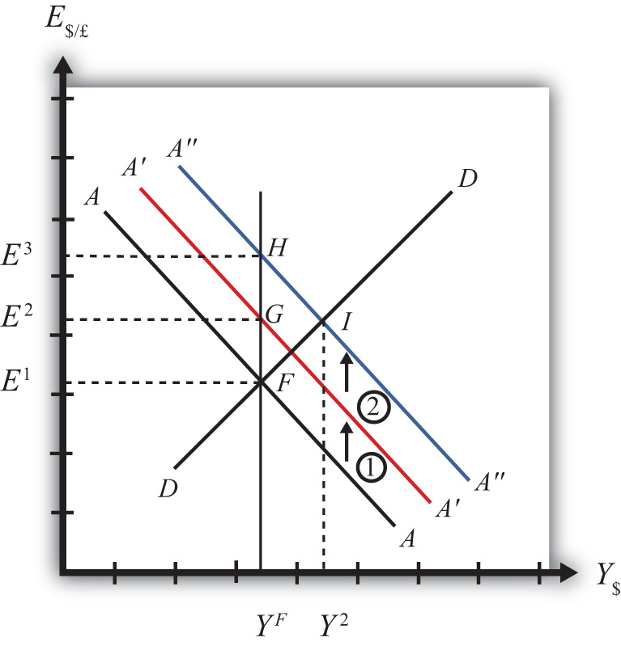
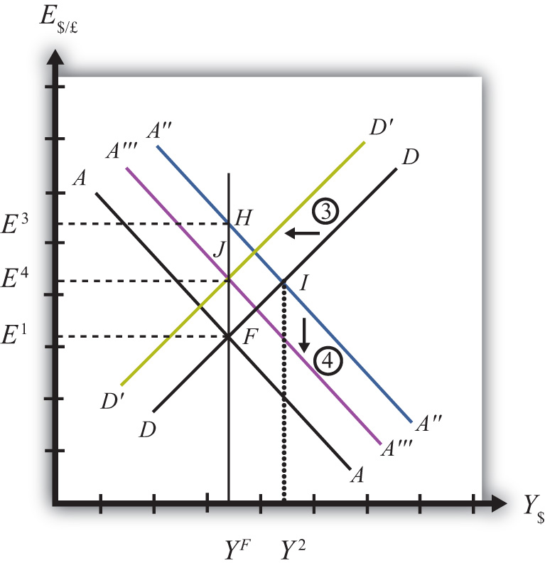

If expansionary monetary policy occurs when the economy is operating at full employment output, then the money supply increase will eventually put upward pressure on prices. Thus we say that eventually, or in the long run, the aggregate price level will rise and the economy will experience an episode of inflation in the transition. See Chapter 18 "Interest Rate Determination", Section 18.14 "Money Supply and Long-Run Prices" for a complete description of this process.
Here, we will describe the long-run effects of an increase in the money supply using the AA-DD model. We break up the effects into short-run and long-run components. In the short run, the initial money supply effects are felt and investor anticipations about future effects are implemented. In the long run, we allow the price level to rise.
Suppose the economy is originally at a superequilibrium, shown as point F in Figure 21.3 "Expansionary Monetary Policy in the Long Run". The original GNP level is YF, and the exchange rate is E1. YF represents the full-employment level of output, which also implies that the natural rate of unemployment prevails. Any movement of the economy to the right of YF will cause an eventual increase in the aggregate price level. Any movement to the left of YF causes an eventual decrease in the price level.
Figure 21.3 Expansionary Monetary Policy in the Long Run
Next, suppose the U.S. central bank (or the Fed) decides to expand the money supply. As shown in Chapter 20 "The AA-DD Model", Section 20.5 "Shifting the AA Curve", money supply changes cause a shift in the AA curve. More specifically, an increase in the money supply will cause AA to shift upward (i.e., ↑MS is an AA up-shifter). This is depicted in the diagram as a shift from the AA line to the red A′A′ line.
In the long-run adjustment story, several different changes in exogenous variables will occur sequentially, thus it is difficult to describe the quick final result, so we will only describe the transition process in partial detail.
The increase in the money supply causes the first upward shift of the AA curve, shown as step 1 in the diagram. Since exchange rates adjust much more rapidly than gross national product (GNP), the economy will quickly adjust to the new A′A′ curve before any change in GNP occurs. That means the first adjustment will be from point F to point G directly above. The exchange rate will increase from E1 to E2, representing a depreciation of the U.S. dollar.
The second effect is caused by changes in investor expectations. Investors generally track important changes in the economy, including money supply changes, because these changes can have important implications for the returns on their investments. Investors who see an increase in money supply in an economy at full employment are likely to expect inflation to occur in the future. When investors expect future U.S. inflation, and when they consider both domestic and foreign investments, they will respond today with an increase in their expected future exchange rate (E$/£e). There are two reasons to expect this immediate effect:
The timing of the change in E$/£e will depend on how quickly investors recognize the money supply change, compute its likely effect, and incorporate it into their investment plans. Since investors are typically very quick to adapt to market changes, the expectations effect should take place in the short run, perhaps long before the inflation ever occurs. In some cases, the expectations change may even occur before the Fed increases the money supply, if investors anticipate the Fed’s action.
The increase in the expected exchange rate (this means a decrease in the expected future dollar value) causes a second upward shift of the AA curve, shown as step 2 in the diagram. Again, rapid exchange rate adjustment implies the economy will quickly adjust to the new A″A″ curve at point H directly above. The exchange rate will now increase from E2 to E3, representing a further depreciation of the U.S. dollar.
Once at point H, aggregate demand, which is on the DD curve to the right of H, exceeds aggregate supply, which is still at YF. Thus GNP will begin to rise to get back to G&S market equilibrium on the DD curve. However, as GNP rises, the economy moves above the A″A″ curve that forces a downward readjustment of the exchange rate to get back to asset market equilibrium on A″A″. In the end, the economy will adjust in a stepwise fashion from point H to point I, with each rightward movement in GNP followed by a quick reduction in the exchange rate to remain on the A″A″ curve. This process will continue until the economy reaches the temporary superequilibrium at point I.
The next effect occurs because GNP, now at Y2 at point I, has risen above the full employment level at YF. This causes an increase in U.S. prices, meaning that P$ (the U.S. price level) begins to rise. The increase in U.S. prices has two effects as shown in Figure 21.4 "Expansionary Monetary Policy in the Long Run, Continued". An increase in P$ is both a DD left-shifter and an AA down-shifter.
Figure 21.4 Expansionary Monetary Policy in the Long Run, Continued
In step 3, we depict a leftward shift of DD to D′D′. DD shifts left because higher U.S. prices will reduce the real exchange rate. This makes U.S. G&S relatively more expensive compared with foreign G&S, thus reducing export demand, increasing import demand, and thereby reducing aggregate demand.
In step 4, we depict a downward shift of A″A″ to A′″A′″. AA shifts down because a higher U.S. price level reduces real money supply. As the real money supply falls, U.S. interest rates rise, leading to an increase in the rate of return for U.S. assets as considered by international investors. This in turn raises the demand for U.S. dollars on the Forex, leading to a dollar appreciation. Since this effect occurs for any GNP level, the entire AA curve shifts downward.
Steps 3 and 4 will both occur simultaneously, and since both are affected by the increase in the price level, it is impossible to know which curve will shift faster or precisely how far each curve will shift. However, we do know two things. First, the AA and DD shifting will continue as long as GNP remains above the full employment level. Once GNP falls to YF, there is no longer upward pressure on the price level and the shifting will cease. Second, the final equilibrium exchange rate must lie above the original exchange rate. This occurs because output will revert back to its original level, the price level will be higher, and according to PPP, eventually the exchange rate will have to be higher as well.
The final equilibrium will be at a point like J, which lies to the left of I. In this transition, the exchange rate will occasionally rise when DD shifts left and will occasionally fall when AA shifts down. Thus the economy will wiggle its way up and down, from point I to J. Once at point J, there is no reason for prices to rise further and no reason for a change in investor expectations. The economy will have reached its long-run equilibrium.
Note that one cannot use the iso-CAB line to assess the long-run effect on the current account balance. In the final adjustment, although the final equilibrium lies above the original iso-CAB line, in the long run the P$ changes will raise the iso-CAB lines, making it impossible to use these to identify the final effect.
However, in adjusting to the long-run equilibrium, the only two variables affecting the current account that will ultimately change are the exchange rate and the price level. If these two rise proportionally to each other, as they would if purchasing power parity held, then there will be no long-run effect on the current account balance.
The final long-run effect of an increase in the U.S. money supply in a floating exchange rate system is a depreciation of the U.S. dollar and no change in real GNP. Along the way, GNP temporarily rises and unemployment falls below the natural rate. However, this spurs an increase in the price level, which reduces GNP to its full employment level and raises unemployment back to its natural rate. U.S. inflation occurs in the transition while the price level is increasing.
Jeopardy Questions. As in the popular television game show, you are given an answer to a question and you must respond with the question. For example, if the answer is “a tax on imports,” then the correct question is “What is a tariff?”